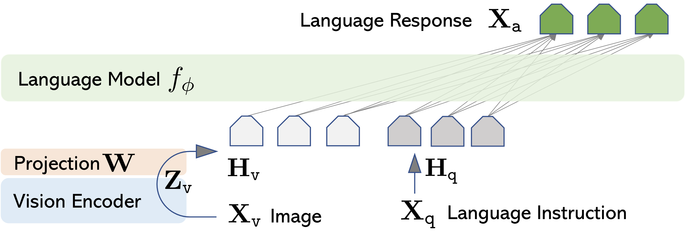

2. Multimodal Input Processing#
2.1. Recap: Text#
A typical, text-only LLM is a stack of self-attention layers, with an embedding layer on the input side and the lm_head (token prediction) layer on the output side.
Layer |
Input |
Output |
|---|---|---|
nn.Linear (token embedding) |
(batch=*, sequence=2048, token_index: int) |
(batch=*, sequence=2048, emb_dim=4096 |
Self-Attention 1 |
(batch, sequence, emb_dim) |
(batch, sequence, emb_dim) |
Self-Attention 2 |
(batch, sequence, emb_dim) |
(batch, sequence, emb_dim) |
Self-Attention 3 |
(batch, sequence, emb_dim) |
(batch, sequence, emb_dim) |
… |
(batch, sequence, emb_dim) |
(batch, sequence, emb_dim) |
Self-Attention 31 |
(batch, sequence, emb_dim) |
(batch, sequence, emb_dim) |
Self-Attention 32 |
(batch, sequence, emb_dim) |
(batch, sequence, emb_dim) |
nn.Linear -> nn.Softmax (lm_head) |
(batch, sequence, emb_dim) |
(batch, sequence, n_token=50_000) |
In such a LLM, text data is handle first by a tokenizer; then the embedding layer. Only then, text is represented as a (sequence of) vector(s); it is embedded on a vector space; which is then digested by the Transformer, a large language model. Before training, this structure – somewhat effective tokenization and vector representation – gives a room for the vector sequence to become semantically meaningful.
While training, the embedding layer is trained simultaneously, to output a semantically meaningful representation of the text, \(\mathbf{H}_\mathtt{q}\).
text -> [tokenizer] -> integer seq -> [embedding layer] -> vector seq -> [Transformers]
2.2. Image: Encoder and Adaptor#
Likewise, we need some way to process an image as an input of a LLM. Let’s break this process into an image encoder and an image adaptor. On a high level, this process is the same as we did to the text. As a result, we would get a vector representation \(\mathbf{H}_\mathtt{v}\).
Encoder outputs a vector representation (or a sequence of vector) \(\mathbf{Z}_\mathtt{v}=g(\mathbf{X}_\mathtt{v})\). Here, \(g()\) refers to the image encoder and \(\mathbf{X}_\mathtt{v}\) is the input image. The encoder can be, for example, a ViT [DBK+20], or any other image encoder.
Adaptor is usually a linear layer (matrix multiplication) \(\mathbf{W}\) that matches the vector dimension. In other words, \(\mathbf{H}_\mathtt{v}=\mathbf{W} \cdot \mathbf{Z}_\mathtt{v}\). For example, if we’re using llama 7B model, \(\mathbf{W}\) would convert the input visual features to a sequence of 4096-dim vectors.
This process is illustrated nicely in [LLWL24], where visual-input instruction task was performed (e.g., visual question-answer and image captioning).

At the end, the Transformer architecture (\(f_\phi\) in the image) performs the same task – to process input (\(\mathbf{H}_\mathtt{v}\) and \(\mathbf{H}_\mathtt{q}\)), through the self-attention layers, to generate the optimal outputs \(\mathbf{X}_\mathtt{a}\). During training, the language model learns to understand not only the text representation but also the image representation.